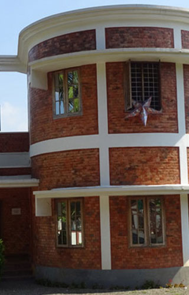

Bay Island Museum
Bay Island Driftwood Museum
A collection of unique driftwood sculptures is displayed at this snug, cylinder-shaped museum.
Kottayam is a city in the Indian state of Kerala. It is the district headquarters of Kottayam district, located in south-west Kerala. Kottayam is located in the basin of the Meenachil River at an average elevation of 3 metres above sea level, and has a moderate climate.
A collection of unique driftwood sculptures is displayed at this snug, cylinder-shaped museum.
Aruvikuzhy Waterfalls is a waterfall in Kottayam district in the Kerala state of India. It is situated 2 km from Pallickathode and 7.5 km from Pampady. The waterfall measures about 30 ft in height and active only during monsoon. In summer the river almost dries up.
A valley of rocky mountains that reflects the rays of the sun like a perfect mirror; this is the special distinction that led to Kannadipara (Rock Mirror) getting its name. The highest point in theIlaveezhapoonchira Range, it is among the finest attractions in Kottayam district. Ilaveezhapoonchira on its own encompasses Mankunnu, Kudayathoor Vindhyan, and Thonippara Hills. This elevated location gives one a view of a plethora of districts, including Kottayam, Idukki, Ernakulam, Alappuzha, Pathanamthitta and Thrissur. Nearby lies Kazhukankulimali Waterfalls, where joyful cascades gush down the mountain and greet the river below with a huge splash.